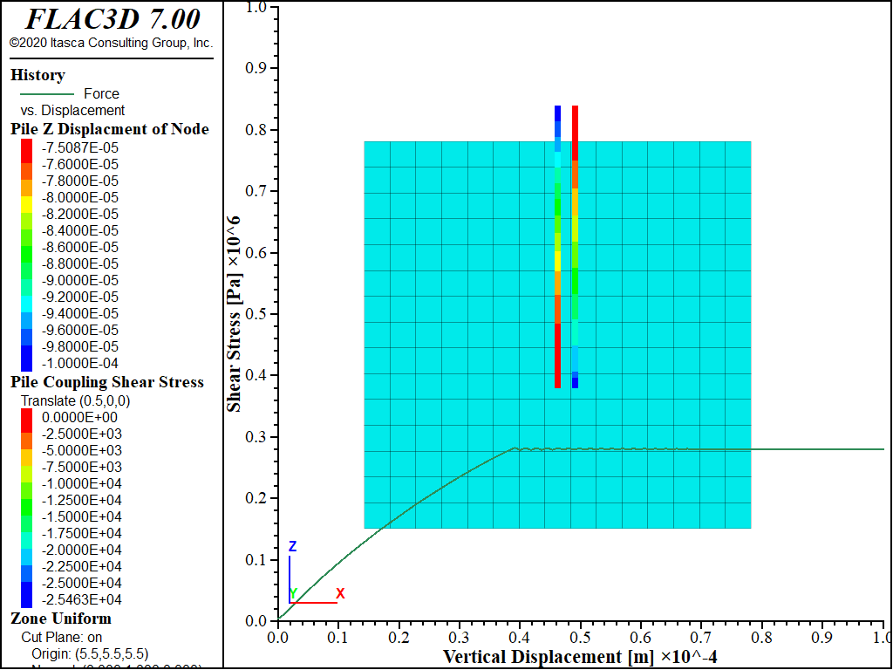
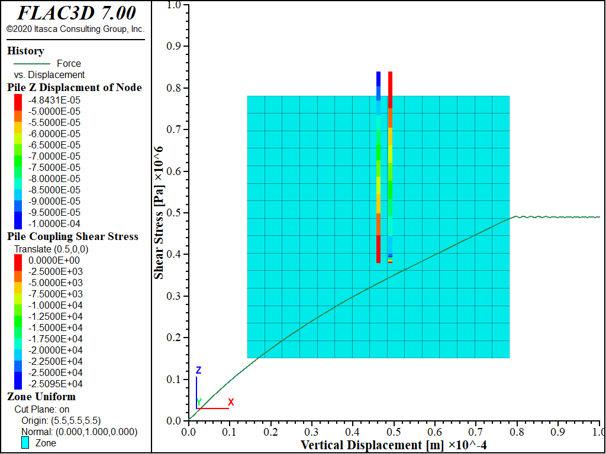

轴向受荷桩
问题描述
注意
本示例的工程文件可在 FLAC3D 中查看/运行。[1] 所使用的主数据文件（main data files）在本示例末尾给出。其余数据文件可在该工程中找到。
桩通过两种机制将轴向荷载传递到地基：沿桩身的侧摩阻力和端承力。桩单元逻辑直接包含侧摩阻力效应，而端承力效应可以通过对桩底节点的连接方式作小幅修改来纳入。本示例对这两种效应都进行了考察。
侧摩阻力——无黏性土中长度为 \(L\) 的单桩极限承载力是侧摩阻力所提供桩身阻力的函数，由下式给出（Cernica 1995）
| 其中： | \(L_i\) | = | 桩长增量 \(i\)； |
| \((a_s)_i\) | = | 长度 \(\Delta L\) 内桩身与土体接触的面积；以及 | |
| \((s_s)_i\) | = | 单位桩身阻力。 |
对于均匀土体条件和恒定桩截面，\(s_s\) 和 \(a_s\) 为常数，且
在自由排水的无黏性土中，假定 \(s_s\) 的值等于
| 其中： | \(K_s\) | = | 桩身平均土压力系数； |
| \(\sigma_{avg}\) | = | 沿桩身的平均有效上覆压力；以及 | |
| \(\phi_s\) | = | 侧摩阻角。 |
端承力——单桩端承阻力所提供的极限承载力通常按浅基础承载力原理、使用承载力系数 \(N_c\)、\(N_q\) 和 \(N_{\gamma}\) 计算。对于无黏性土中的单桩，端承承载力 \(Q_p\) 由下式给出（Cernica 1995）
| 其中： | \(A_p\) | = | 桩端面积； |
| \(\gamma\) | = | 土体重度； | |
| \(N_q\) | = | \(\bigl ( {{1 + \sin \phi} \over {1 - \sin \phi}} \bigr )^2\)；以及 | |
| \(\phi\) | = | 土体的摩擦角。 |
于是，无黏性土中单桩的总承载力为
本示例中，对无黏性土中的单桩通过在桩顶施加恒定竖向速度进行轴向加载。监测顶部桩单元中的轴力以确定极限荷载（即极限承载力）。土中桩长为 7 m，桩径为 1 m。土体摩擦角为 10°，并假定桩身与土体之间的侧摩阻力角也为 10°。土体重度为 20,000 N/m3，并假定应力状态为各向同性（\(K_s\) = 1）。假定强度线性变化，在桩中部深度处计算得到沿桩身的平均有效上覆压力为 70,000 Pa。
如果仅考虑桩身侧摩阻力，使用方程(2)和(3)，桩的极限承载力为 \(Q_s\) = 271 kN。如果计入端承力，使用方程(5)，总承载力 \(Q\) = 493 kN。
在 FLAC3D 数据文件中，首先仅考虑桩侧阻力进行分析。将 coupling-friction-shear 设为 10°，其他耦合弹簧强度参数设为零。顶部桩单元中轴力的时程随顶部节点竖向位移的变化绘于图 1（Figure 1）。极限荷载等于 280 kN。
该图还包含沿桩身的耦合弹簧剪应力分布图，显示出剪应力随深度线性增大。请注意，本分析使用组合阻尼（结构组合局部阻尼（structure damping combined-local））而非局部阻尼，因为桩上的向下荷载会导致某一方向上出现显著的均匀运动（见 力学阻尼（Mechanical Damping））。
底部节点处的连接提供了 桩结构单元（Pile Structural Elements） 中所述的桩-网格相互作用。该相互作用不包括端承效应。为包含端承效应，必须删除该连接，代之以在轴向包含法向屈服弹簧的新连接，并指定适当的弹簧性质。我们通过在创建桩之后加入命令来包含端承效应：
struct link delete range position-z 4.0
struct link create target zone group 'End' range position-z 4.0
struct link attach x=normal-yield y=free z=free range group 'End'
struct link attach rotation-x=free rotation-y=free rotation-z=free range group 'End'
struct link property x area=1.0 stiffness=5.4e11 yield-compression=2.22e5 range group 'End'
前两条命令删除已有的连接，并用赋予分组名 终点（End） 的新连接替换。所有连接性质均相对于源节点的节点局部坐标系确定。由于源节点被桩单元使用，其节点局部坐标系的方向将使得 \(x\) 方向与桩轴线对齐。请注意，该方位在一组循环开始时自动设定，或在执行 执行计算时步（model cycle） 0 命令时设定。
接下来的三条命令将所有连接方向的附着条件设为自由，但 \(x\) 方向除外，在该方向插入一个法向屈服弹簧。最后一条命令按下述方式设置该弹簧的性质。弹簧刚度 \(K\) 至少应等于原系统（在其连接被删除之前）底部节点的轴向刚度。命令 结构节点列表刚度（structure node list stiffness） 显示该值为 5.4 × 1011 N/m。因此，将弹簧面积设为 1.0 m2，弹簧刚度设为 5.4 × 1011 N/m3。将弹簧的压缩屈服强度设为 7 m 深度处的承载力，如方程(4)所示，等于 222 kN。
结果见图 2（Figure 2）。当计入端承阻力时，极限荷载等于 490 kN。FLAC3D 的两种结果（仅桩侧摩阻力，以及桩侧摩阻力加端承）均与方程(2)和(5)给出的解吻合良好。


图 1：摩擦桩：顶部力-位移时程及沿桩身的剪应力。


图 2：摩擦桩与端承桩：顶部力-位移时程及沿桩身的剪应力。
参考文献
Cernica, J. N. Geotechnical Engineering: Foundation Design, New York: John Wiley & Sons Inc. (1995).
数据文件
AxiallyLoaded.dat
; 轴向受载桩示例应用
model new
model large-strain off
model title "Axially Loaded Pile"
; 创建网格
zone create brick size 15 15 15 edge=11
zone face skin ; 标记模型边界
; 指定本构模型和参数
zone cmodel assign elastic
zone property bulk=5e9 shear=1e9 density=2000
; 边界条件
zone face apply velocity-normal 0 range group 'East' or 'West'
zone face apply velocity-normal 0 range group 'North' or 'South'
zone face apply velocity-normal 0 range group 'Bottom'
; 初始条件
model gravity 10
zone initialize-stresses
model solve ratio-local 1e-4 ; 应为瞬时完成
; =======================================================
; 在土块中心创建桩
struct pile create by-line (5.5, 5.5, 12) (5.5, 5.5, 4) segments=32
struct pile property young=8.0e10 poisson=0.30 cross-sectional-area=0.7854 ...
moi-polar=0.0 moi-y=0.0 moi-z=0.0 perimeter=3.14 ...
coupling-stiffness-shear=1.3e11 ...
coupling-cohesion-shear=0.0 ...
coupling-friction-shear=10.0 ...
coupling-stiffness-normal=1.3e11 ...
coupling-cohesion-normal=0.0 ...
coupling-friction-normal=0.0 coupling-gap-normal=off
; =======================================================
; 指定并对桩端施加速度。
struct node fix velocity-x range position-z 12
struct node initialize velocity-x 0.5e-8 local range position-z 12
; =======================================================
; 设置用于监测模型响应的历史
struct node history name='disp' displacement-z position (5.5,5.5,12)
struct pile history name='force' force-x position (5.5,5.5,12)
; =======================================================
struct mechanical damping combined-local
model save 'Initial'
; =======================================================
; 施加速度以实现 10e-5 m 的总位移
model cycle 20000
model save 'AxiallyLoaded-1'
; =======================================================
; 考虑端承效应
model restore 'Initial'
struct link delete range position-z 4.0
struct link create target zone group 'End' range position-z 4.0
struct link attach x=normal-yield y=free z=free ...
range group 'End'
struct link attach rotation-x=free rotation-y=free rotation-z=free ...
range group 'End'
struct link property x area=1.0 stiffness=5.4e11 yield-compression=2.22e5 ...
range group 'End'
model cycle 20000
model save 'AxiallyLoaded-2'
尾注
| [1] | 要在 FLAC3D 中查看该项目，请使用程序菜单。
⮡ FLAC |
| 这些内容对您有帮助吗？… | FLAC3D © 2019, Itasca | 原文更新于 2020 年 10 月 8 日 |
| 版权与免责声明 | ||